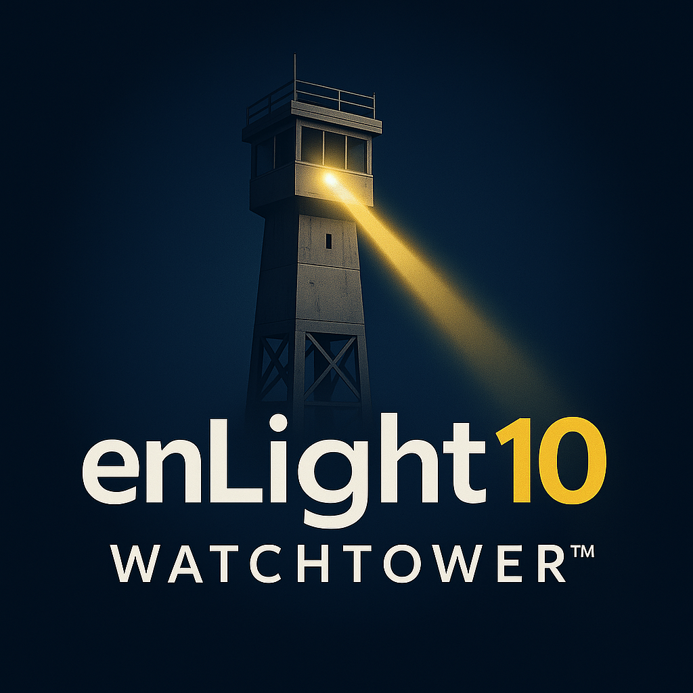

1. Intake
Capture business and mission context, key systems, compliance drivers, current policies, available evidence, and the risk questions leadership needs answered.

enLight10 Solutions helps public-sector, small-business, DIB, SOC, and OT/ICS teams move from uncertainty to a practical cyber readiness plan.
Assess. Improve. Prove.
Human-reviewed, integration-friendly workflows without replacing the tools you already use.
enLight10 helps organizations assess risk, map findings to compliance and business impact, prioritize remediation, and organize evidence using practitioner-led workflows and Watchtower AI-enabled support.
Start with a scoped review, then turn findings into decisions, owners, evidence, and measurable progress.
enLight10 starts with the environment in front of you: business context, systems, compliance drivers, policies, evidence, risk goals, and operating constraints. Then we map risk, prioritize action, and help prove progress.
Capture business and mission context, key systems, compliance drivers, current policies, available evidence, and the risk questions leadership needs answered.
Review security posture, control gaps, exposure, process maturity, evidence quality, SOC workflows, and OT/ICS readiness where applicable.
Map findings to NIST CSF, NIST 800-53, NIST 800-171, CMMC, SOC 2, evidence gaps, risk register entries, and remediation needs where applicable.
Identify quick wins, high-risk fixes, owners, sequencing, and the roadmap needed to move from findings to measurable improvement.
Support SOC uplift, remediation tracking, playbooks, reporting, and Watchtower workflows that help teams maintain proof of progress.
Focused support for readiness, compliance, operational uplift, and evidence-backed reporting.
Cyber baseline assessments, policy and incident response plan review, evidence review, compliance readiness, risk registers, and remediation roadmaps.
Organize evidence, map findings, accelerate reporting, and track remediation with human-reviewed workflows. Watchtower supports the process without replacing SIEM, EDR, GRC, or patching tools.
Advisory support for triage workflow, detection improvement, reporting, playbooks, escalation paths, and operational metrics.
Advisory-led readiness support for operational environments where safety, uptime, asset context, dependency awareness, and practical risk review matter.
Assessment-led cyber readiness is useful when teams need a practical baseline, a compliance roadmap, or a clearer way to prove improvement.
Tell us about your organization, compliance drivers, evidence needs, and timeline. We’ll help scope an assessment-first path toward prioritized remediation and measurable improvement.
New to enLight10? Start with a Cyber Readiness Review. It gives us enough context to understand your goals, evidence, compliance drivers, and operational constraints before recommending a larger path.